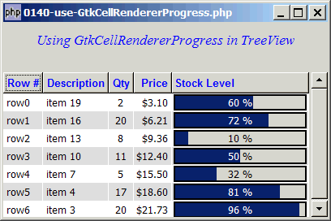

Problem
You would like to display progress bar in a tree view as shown below:

Solution
- Progress bars are displayed in GtkTreeView using GtkCellRendererProgress.
- Note that the values are specified in percentages. For 60%, it's specified as '60', not '.6'.
Sample Code
| 1 2 3 4 5 6 7 8 9 10 11 12 13 14 15 16 17 18 19 20 21 22 23 24 25 26 27 28 29 30 31 32 33 34 35 36 37 38 39 40 41 42 43 44 45 46 47 48 49 50 51 52 53 54 55 56 57 58 59 61 62 63 64 65 66 67 68 69 70 71 72 73 74 75 76 77 78 79 80 81 82 83 84 85 86 87 88 89 90 91 92 93 94 95 96 97 98 99 100 101 102 103 105 106 107 108 109 110 111 112 113 114 115 116 117 118 119 | <?php $window = new GtkWindow(); $window->set_size_request(400, 240); $window->connect_simple('destroy', array('Gtk','main_quit')); $window->add($vbox = new GtkVBox()); // display title $title = new GtkLabel("Using GtkCellRendererProgress in TreeView"); $title->modify_font(new PangoFontDescription("Times New Roman Italic 10")); $title->modify_fg(Gtk::STATE_NORMAL, GdkColor::parse("#0000ff")); $title->set_size_request(-1, 40); $vbox->pack_start($title, 0, 0); $vbox->pack_start(new GtkLabel(), 0, 0); // the 2D table $data = array( array('row0', 'item 42', 2, 3.1, 60), // note 1 array('row1', 'item 36', 20, 6.21, 72), array('row2', 'item 21', 8, 9.36, 10), array('row3', 'item 10', 11, 12.4, 50), array('row4', 'item 7', 5, 15.5, 32), array('row5', 'item 4', 17, 18.6, 81), array('row6', 'item 3', 20, 21.73, 96)); display_table ($vbox, $data); $window->show_all(); Gtk::main(); function display_table($vbox, $data) { // Set up a scroll window $scrolled_win = new GtkScrolledWindow(); $scrolled_win->set_policy( Gtk::POLICY_AUTOMATIC, Gtk::POLICY_AUTOMATIC); $vbox->pack_start($scrolled_win); // Creates the list store if (defined("GObject::TYPE_STRING")) { $model = new GtkListStore(GObject::TYPE_STRING, GObject::TYPE_STRING, GObject::TYPE_LONG, GObject::TYPE_DOUBLE, GObject::TYPE_DOUBLE); } else { $model = new GtkListStore(Gtk::TYPE_STRING, Gtk::TYPE_STRING, Gtk::TYPE_LONG, Gtk::TYPE_DOUBLE, Gtk::TYPE_DOUBLE); } $field_header = array('Row #', 'Description', 'Qty', 'Price', 'Stock Level'); $field_justification = array(0.0, 0.0, 0.5, 1.0, 0.0); // Creates the view to display the list store $view = new GtkTreeView($model); $scrolled_win->add($view); // Creates the columns for ($col=0; $col<count($field_header); ++$col) { if ($col==4) { $cell_renderer = new GtkCellRendererProgress(); // note 2 $column = new GtkTreeViewColumn($field_header[$col], $cell_renderer, 'value', $col); } else { $cell_renderer = new GtkCellRendererText(); $cell_renderer->set_property("xalign", $field_justification[$col]); $column = new GtkTreeViewColumn($field_header[$col], $cell_renderer, 'text', $col); $column->set_alignment($field_justification[$col]); $column->set_sort_column_id($col); } // set the header font and color $label = new GtkLabel($field_header[$col]); $label->modify_font(new PangoFontDescription("Arial Bold")); $label->modify_fg(Gtk::STATE_NORMAL, GdkColor::parse("#0000FF")); $column->set_widget($label); $label->show(); // setup self-defined function to display alternate row color $column->set_cell_data_func($cell_renderer, "format_col", $col); $view->append_column($column); } // pupulates the data for ($row=0; $row<count($data); ++$row) { $values = array(); for ($col=0; $col<count($data[$row]); ++$col) { $values[] = $data[$row][$col]; } $model->append($values); } // setup selection $selection = $view->get_selection(); $selection->connect('changed', 'on_selection'); } function format_col($column, $cell, $model, $iter, $col_num) { $path = $model->get_path($iter); $row_num = $path[0]; if ($col_num==3) { $amt = $model->get_value($iter, 3); $cell->set_property('text', '$'.number_format($amt,2)); } elseif ($col_num==4) { $val = $model->get_value($iter, 4); $cell->set_property('value', $val); // note 3 } $row_color = ($row_num%2==1) ? '#dddddd' : '#ffffff'; $cell->set_property('cell-background', $row_color); } function on_selection($selection) { list($model, $iter) = $selection->get_selected(); $desc = $model->get_value($iter, 1); $qty = $model->get_value($iter, 2); $price = $model->get_value($iter, 3); print "You have selected $desc: $qty ($price)\n"; } ?> |
Output
As shown above.
Explanation
This example makes use of the code in How to display a 2D array in GtkTreeView - Part 5 - get user selection?
What's new here:
- We store the percentages in the last column. Note that 60% is specified as '60', not '.6'.
- Create the GtkCellRendererProgress.
- Set the value.
Read more...